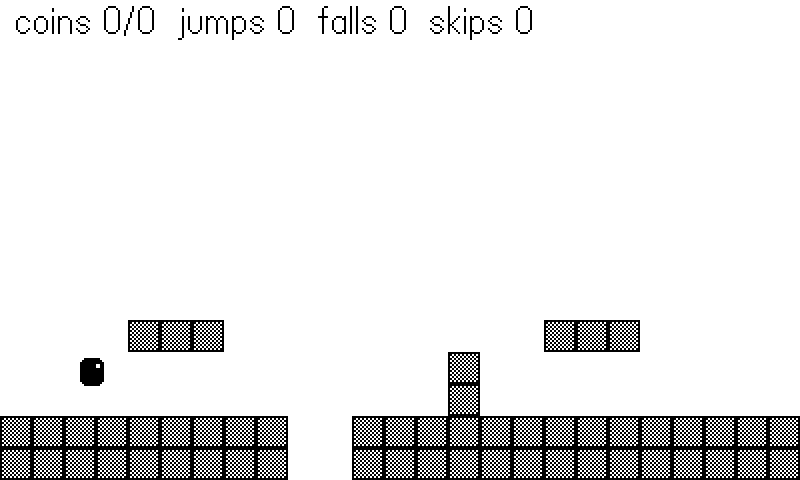
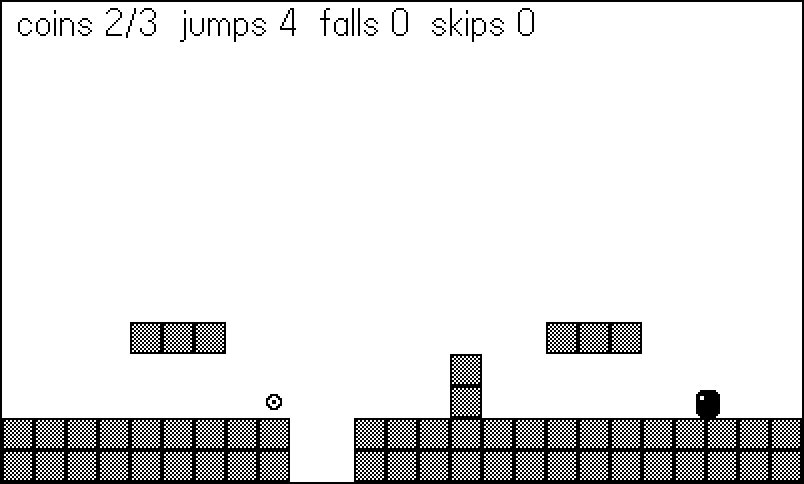
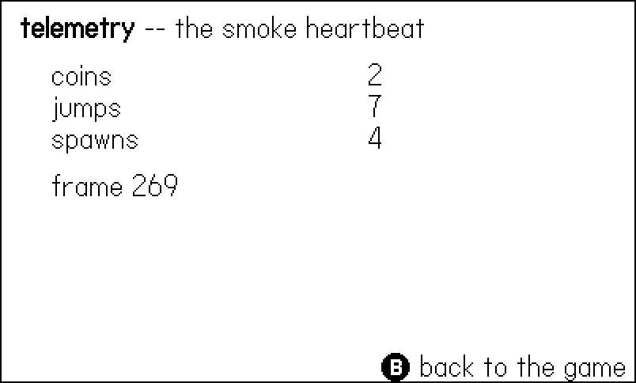

18 Testing Without Touching It
Every chapter so far has ended the same way: build the example, run it, look at it. That works for one project and one afternoon. It does not work for a game with twenty-eight rooms, or for the night you change a physics constant at 11 p.m. and need to know whether any of the six bosses still dies correctly. The sixty games behind this book were not tested by a person with a d-pad. They were tested by the machine: a 47-line harness that runs the game in the Simulator with nobody watching, records the first crash, counts everything that happens, drives itself with a bot, and photographs the screen on the way through.
This chapter builds that machine. The example, 18-harness, is the Chapter 14 platformer distilled and given a job: coins spawn around the course, a robot player chases them, and the whole thing runs — and fails, and gets fixed — without a human touching a button. Along the way you will meet a real bug that the harness caught in exactly the way it catches them in the shipped games, and learn the three hard-won rules of writing autopilots.
And then the curtain comes all the way up. The scaffolding you have been politely ignoring since Chapter 1 — shots.lua, bookharness.lua, the Harness.frame wrapper at the bottom of every main.lua — is this chapter’s subject. Every figure in this book was captured by the machinery you are about to build.
18.1 pdc green means almost nothing
pdc is a compiler for a dynamic language: it proves your Lua parses, and that is all it proves. A misspelled API name, a nil field, an off-by-one that only bites when the random number generator picks column ten — none of these exist until the line runs. There is no type checker to lean on and no REPL to poke at the live game. On Playdate, runtime verification has exactly one form: run the game in the Simulator and see what happens.
“See what happens” is the part to automate. A human tester is slow, expensive, gets bored, and cannot rerun last Tuesday’s session exactly. What you want is a build that answers three questions on its own:
- Did it crash? And if so, where — with a message, not a frozen window.
- Did the right things happen? Not “does it look OK” but how many enemies spawned, coins were collected, saves were written.
- What did it look like? Screenshots, because some bugs are invisible to counters.
The answers have to escape the Simulator somehow. The channel is one you already know from Chapter 17: the datastore. Everything the game writes lands in Disk/Data/<bundleID>/ as JSON on your development machine, where a shell script — or you, with cat — can read it while the game is still running.
18.2 The harness, in full
Here is the real thing: the smoke-test harness from Molt, the 28-room arkanoidvania, reproduced whole. Forty-seven lines, and it has flown thousands of unattended runs across the shipped games in one variation or another.
-- molt/source/harness.lua
-- Smoke-test harness (Bin Night pattern). The Makefile stages smokeflag.lua:
-- SMOKE_BUILD false for release (no-op), true for `make smoke` (pcall-wrapped
-- update writing errors to the "err" datastore, a 90-frame heartbeat to
-- "smoke", frame-stamped screenshots, and an autopilot Input consults).
import "smokeflag"
Harness = {
enabled = SMOKE_BUILD,
counters = {},
autopilot = nil,
extra = nil,
shotPrefix = nil,
}
function Harness.count(key, n)
if not Harness.enabled then return end
Harness.counters[key] = (Harness.counters[key] or 0) + (n or 1)
end
function Harness.set(key, val)
if not Harness.enabled then return end
Harness.counters[key] = val
end
function Harness.frame(frame, updateFn)
if not Harness.enabled then
updateFn()
return
end
local ok, err = pcall(updateFn)
if not ok and not Harness.errWritten then
Harness.errWritten = true -- keep the FIRST error; later frames repeat symptoms
playdate.datastore.write({ err = tostring(err) }, "err")
end
if frame % 90 == 0 then
local t = {}
for k, v in pairs(Harness.counters) do t[k] = v end
t.frame = frame
if Harness.extra then pcall(Harness.extra, t) end
playdate.datastore.write(t, "smoke")
end
if Harness.shotPrefix and playdate.simulator and (frame == 20 or frame % 300 == 0) then
playdate.simulator.writeToFile(playdate.graphics.getDisplayImage(),
string.format("%s%06d.png", Harness.shotPrefix, frame))
end
endWalk it top to bottom, because every line earns its place.
The flag. SMOKE_BUILD comes from smokeflag.lua, a file the Makefile generates into the staging directory — true for a smoke build, false for release. When it is false, Harness.frame calls straight through to the real update and every other function returns immediately. The instrumentation ships with the game and costs a single if per frame. (This book’s example.mk does the same trick with bookflag.lua.)
The pcall. The real update runs inside pcall, so a runtime error does not kill the run — it becomes data. The error string is written to the err datastore, which appears on your machine as Disk/Data/<bundleID>/err.json. Note the guard: only the first error is kept. A game whose update crashes on frame 500 will usually crash on frame 501, 502, and every frame after; the first message is the cause, the rest are symptoms, and letting them overwrite the file would bury the lead.
The heartbeat. Every 90 frames — three seconds of game time — the counter table is copied, stamped with the frame number, and written to the smoke datastore. A script polling smoke.json can tell a healthy run (numbers moving) from a hung one (heartbeat stopped) from a dead one (err.json exists) without any protocol fancier than “read a JSON file”. Harness.extra is a hook for per-game state — Molt stuffs the current room, hearts, and pearl position into every beat.
The screenshots. playdate.simulator.writeToFile(image, path) writes a PNG to a path on your development machine — it is a Simulator-only API, and it is the only sanctioned way to get pixels out of a headless run. Molt shoots frame 20 (the game pristine, just after boot) and every 300th frame after, each file frame-stamped.
The datastore has an image function, playdate.datastore.writeImage, and it is a trap for this job: it writes a .pdi — Playdate’s compiled image format — into the game’s data directory. Nothing on your desktop opens a .pdi. It exists so a game can cache images for itself. For screenshots a human will look at, use playdate.simulator.writeToFile with an absolute host path ending in .png, and make sure the directory already exists — the API will not create it.
One more line matters, and it lives outside the harness: smoke builds call playdate.display.setRefreshRate(0), which unthrottles the Simulator completely. A 600-frame scripted run finishes in seconds instead of twenty. Because everything is indexed by frame count rather than wall-clock time, the run is identical at any speed.
18.3 A platformer with a robot player
The example distills Chapter 14’s platformer — the tile map, the 1px-substep mover, run-and-jump — and makes two additions that turn it into a test subject. First, the course gains a pit: two columns with no floor at all, so there is a way to fail.
-- Out of bounds counts as solid, so the edges are walls --
-- EXCEPT below the bottom row. Falling out through the pit is
-- supposed to happen, and the fall is what we want to count.
function Map.solid(tx, ty)
if ty > Map.H then return false end -- the pit exit
if tx < 1 or tx > Map.W or ty < 1 then
return true
end
return Map.grid[ty][tx] == 1
endFalling out of the world is now possible, so it must be handled — and counted:
-- The pit: the player fell out of the world. Respawn -- and
-- COUNT it, because a "falls" that never moves would mean
-- the pit is unreachable, and one that races upward would
-- mean the bot can't cross it. Either number is a finding.
if p.a.y > 260 then
Harness.count("falls")
Player.reset()
endSecond, coins spawn onto random columns every couple of seconds, giving a bot something to want. The spawner finds the floor of a random column by scanning down the grid. Here is the version that ships:
-- Find the floor of a random column and hang a coin just above
-- it. A pit column has NO floor: the bounded scan runs off the
-- bottom of the grid, so we skip the spawn -- and count the
-- skip, because a counter that never moves is a question.
function Coins.spawn()
local tx = math.random(Map.W)
local ty = 1
while ty <= Map.H and not Map.solid(tx, ty) do
ty = ty + 1
end
if ty > Map.H then
Harness.count("spawnSkips") -- pit column, no floor
return
end
Coins.list[#Coins.list + 1] = {
x = (tx - 1) * Map.TILE + 8,
y = (ty - 1) * Map.TILE - 8,
}
Harness.count("spawns")
endThat bounded scan and that spawnSkips counter are scar tissue. The first version of this function was three lines shorter, and it is this chapter’s live demonstration, coming up in a moment.
Input goes through the seam you have seen since Chapter 9 — the harness bot is consulted first, the hardware second:
-- The seam (Chapter 9): the bot is consulted first, so one
-- build serves a human with a d-pad and a robot with a script.
local function gather(frame)
local bot = Harness.input(frame)
if bot then return bot end
local held = playdate.buttonIsPressed
return {
left = held(playdate.kButtonLeft),
right = held(playdate.kButtonRight),
jump = held(playdate.kButtonA),
tele = playdate.buttonJustPressed(playdate.kButtonB),
}
endAnd the file ends with the standard wrapper, the single point where the harness takes custody of every frame:
-- The standard wrapper: every frame goes through the harness,
-- which pcalls the real update, captures shots, and reports.
local realUpdate = playdate.update
function playdate.update()
frame = frame + 1
Harness.frame(frame, realUpdate)
endFigure 18.1 shows the arena: ground, a step, two floating ledges, and the pit gaping at the bottom center.

18.4 The bug the harness caught
The first version of Coins.spawn scanned for a floor like this:
-- the first version of Coins.spawn -- do NOT ship this
local tx = math.random(Map.W)
local ty = 1
while Map.grid[ty][tx] ~= 1 do -- pit columns have no floor:
ty = ty + 1 -- ty walks off the grid and
end -- Map.grid[16] is nilIt works almost every time. Twenty-three of the twenty-five columns have a floor, the scan finds it, the coin appears. But roughly one spawn in twelve picks column 10 or 11 — the pit — where no tile is ever solid. ty marches past the bottom of the grid, Map.grid[16] is nil, and indexing it throws. Under a human player this is the worst kind of bug: rare, random-feeling, and reported as “it crashed after a few minutes, not sure what I was doing.”
Under the harness it is nothing at all. The bot run hits the bad column within the first minute of unthrottled play, the pcall catches the throw, and err.json is sitting on disk with the cause:
{ "err": "coins.lua:28: attempt to index a nil value (field '?')" }File, line, and the exact complaint — while the run keeps going, because only the update that threw is lost. The fix is the shipped version you already read: bound the scan (ty <= Map.H), and when a column has no floor, skip the spawn and count the skip. That counter is not decoration. If spawnSkips ever races ahead of spawns, the map is mostly pit and something upstream broke; if it sits at zero forever on a map that has a pit, the spawner is not actually sampling the columns you think it is. Either way, a number you can read from a JSON file is asking the question for you.
The heartbeat discipline that pays off is indiscriminate counting: shots, kills, deaths, spawns, saves, room changes — every event with a name. The canonical war story from the shipped games: a maze game’s smoke run reported 75 explosions and no crates destroyed. Nothing crashed; every frame drew beautifully. But that one absurd pair of numbers said the bombs were detonating somewhere the crates could never be — a deadlocked maze generator — and it was diagnosed from the heartbeat alone, in seconds, without watching a single frame. A missing counter is the fastest bug signal there is.
A healthy heartbeat from this chapter’s example reads something like:
{ "coins": 7, "spawns": 8, "spawnSkips": 2, "jumps": 14,
"falls": 1, "bursts": 1, "frame": 270, "done": true }Read it like a doctor: coins close to spawns (the bot is actually collecting), a couple of skips (the pit is being sampled), at least one fall (the death path ran), a burst (the recovery path ran). One run exercised every path the example has — including both endings. That is the other half of the discipline: verify the failure path on purpose. When the shipped games’ bots test a boss, one scripted run also makes the autopilot cease fire so the boss wins; a game-over screen that only a losing player ever sees is otherwise the least-tested screen in the game.
The example makes the counters visible two ways. During play, a HUD line across the top shows the live numbers — when one freezes, you can see the bug happen:
-- The counters double as a live HUD: when a number on screen
-- stops moving, you SEE the bug the heartbeat would report.
-- (In a release build the harness never counts, so this HUD is
-- a smoke-build instrument, not player UI.)
local function drawHud()
local c = Harness.counters
gfx.drawText(
("coins %d/%d jumps %d falls %d skips %d"):format(
c.coins or 0, c.spawns or 0, c.jumps or 0,
c.falls or 0, c.spawnSkips or 0),
8, 2)
endAnd pressing B flips to a telemetry screen that renders the whole counter table — exactly what the next heartbeat will write:
-- The heartbeat, on screen: every counter the harness holds,
-- exactly what lands in smoke.json every 90 frames.
local function drawTelemetry(frame)
gfx.clear(gfx.kColorWhite)
gfx.drawText("*telemetry* -- the smoke heartbeat", 12, 8)
local keys = {}
for k in pairs(Harness.counters) do keys[#keys + 1] = k end
table.sort(keys)
local y = 38
for _, k in ipairs(keys) do
gfx.drawText(k, 32, y)
gfx.drawTextAligned(tostring(Harness.counters[k]),
240, y, kTextAlignment.right)
y = y + 20
end
gfx.drawText("frame " .. frame, 32, y + 10)
gfx.drawText("Ⓑ back to the game", 240, 222)
end

18.5 The autopilot
Scripted input comes in two grades. The shots.lua scripts of the early chapters are choreography — “press A on frame 60” — and they are fine when the world is predictable. A game with randomness needs the other grade: a bot that reads game state and decides, every frame, like the enemy AI of Chapter 16 pointed at the player’s chair. The example’s bot chases coins:
-- Chase the nearest coin; patrol right when there are none.
local function target()
local p, best, bd = Player.a, nil, nil
for _, c in ipairs(Coins.list) do
local d = math.abs(c.x - p.x) + math.abs(c.y - p.y)
if not bd or d < bd then best, bd = c, d end
end
return best, bd
endIt probes the world ahead of the player — a wall coming up means jump now; a column with no floor at all is the pit:
-- Look where we are GOING, not where we are: a wall just ahead
-- means jump now; a column with no floor at all means the pit.
local function wallAhead(p, dir)
local tx, ty = Map.tileAt(p.x + dir * 20, p.y)
return Map.solid(tx, ty)
end
local function pitAhead(p, dir)
local tx = Map.tileAt(p.x + dir * 24, p.y)
for ty = 1, Map.H do
if Map.solid(tx, ty) then return false end
end
return true
endAnd the decision function wires it together, wearing the scars of every autopilot the shipped games ever ran:
function Pilot.think(frame)
local b = {}
local p = Player.a
local coin, dist = target()
if burst > 0 then -- committed wander-burst
burst = burst - 1
b.left = burstDir < 0
b.right = burstDir > 0
b.jump = true
return b
end
local dir = 1
if coin then
if math.abs(coin.x - p.x) > 4 then
dir = coin.x > p.x and 1 or -1
b.left = dir < 0
b.right = dir > 0
end
-- jump for coins overhead, for walls, and for the pit
b.jump = (coin.y < p.y - 20
and math.abs(coin.x - p.x) < 30)
or wallAhead(p, dir)
or pitAhead(p, dir)
else
b.right = true -- patrol until one spawns
b.jump = wallAhead(p, 1) or pitAhead(p, 1)
end
-- Stuck means no GOAL progress, not "not moving": a bot
-- pacing under an unreachable coin moves constantly while
-- getting nowhere. Track the best distance ever reached.
if coin and dist then
if not bestDist or dist < bestDist - 1 then
bestDist, stuckFor = dist, 0
else
stuckFor = stuckFor + 1
end
else
bestDist, stuckFor = nil, 0
end
if stuckFor > 90 then -- three seconds of nothing
burst = 25
burstDir = (math.random(2) == 1) and 1 or -1
bestDist, stuckFor = nil, 0
Harness.count("bursts")
end
return b
endThose scars are worth naming, because all three were paid for more than once:
- Detect stuckness by goal progress, not movement. The obvious check — “has the bot moved lately?” — fails precisely when you need it: a bot pacing a wall, or hopping under a coin it cannot reach, moves constantly while achieving nothing. Track the best distance to the goal ever reached, and call it stuck when that number stops improving.
- When boxed in, wander-burst. A stuck bot that re-runs the same logic makes the same mistake forever. A short committed burst of random input — here, 25 frames of one direction plus jump — perturbs it out of the trap far more reliably than smarter planning. (And
Harness.count("bursts")tells you how often it was needed.) - Give area weapons a stand-off distance. Not needed by a coin-collector, but the third scar on the list: an autopilot with a bomb and no no-friendlies-within-radius check will kill itself, its escorts, or both, and then your smoke run measures the wrong failure.
One more lesson rides on top: an autopilot’s job is to exercise code paths, not to win. But when the bot persistently cannot reach an objective, ask whether a human could. In the shipped games this question found genuinely unreachable pickups and a door with no key — design flaws, not bot flaws. This example’s pit-column spawn skip is the same idea in miniature: the naive spawner was happy to place a coin in a column no player could ever stand in.
18.6 The shell side: build, launch, poll, wipe
Inside the Simulator, the harness reports. Outside, something has to build the smoke variant, launch it, watch the datastore, and clean up. That something is a shell script, and Molt’s is the template:
# molt/tools/smoke.sh (the core of it)
pkill -9 -f "Playdate Simulator" 2>/dev/null
rm -rf "$DATA" "$ROOT/build/shots"
mkdir -p "$ROOT/build/shots"
("$SIM" "$ROOT/out/MoltSmoke.pdx" >"$ROOT/build/sim.log" 2>&1 &)
for i in $(seq 1 "$ITER"); do
[ -s "$DATA/err.json" ] && break
if [ -n "$UNTIL" ] && grep -qE "$UNTIL" "$DATA/smoke.json" \
2>/dev/null; then
break
fi
sleep 5
done
# ...print err.json / smoke.json, then:
pkill -9 -f "Playdate Simulator" 2>/dev/null
rm -rf "$DATA"The choreography matters more than the syntax:
- Kill the Simulator first. It is single-instance: a second launch focuses the first one instead of starting your build. Every run begins with
pkill -9because a politely-asked Simulator sometimes declines to quit. - Wipe the datastore before launch. A stale
err.jsonfrom yesterday’s crash will fail today’s healthy run instantly. - Launch and poll. The script sleeps and re-reads two files:
err.json(fail fast the moment it appears, with the message) andsmoke.json(succeed when an until pattern matches — a done flag, a room name, a counter threshold). A timeout catches hangs: no heartbeat movement and no error means the game froze without crashing, which is also an answer. - Kill and wipe after. The datastore directory is deleted at the end so test data never leaks into real saves — the bot’s half-finished progress must not greet the next human player. (On SDK 3.0.6, remember the launch form from Chapter 1: explicit app path, foreground,
--argswith an absolute pdx path.)
That loop — build, kill, wipe, launch, poll, kill, wipe — is the entire integration test infrastructure of sixty shipped games. There is no framework underneath it. It is cat, grep, and two JSON files.
18.7 The reveal: this book runs on it
Now look back at the scaffolding every example in this book carries, because you have seen all of its pieces tonight. bookharness.lua is the Molt harness with the autopilot slot and the screenshot schedule generalized. The seam is the same seam:
-- Synthetic input for this frame, or nil when a human is playing.
-- Examples consult this at the top of their input gathering, exactly like
-- the autopilot seam in the shipped games.
function Harness.input(frame)
if not Harness.enabled or not Shots or not Shots.script then return nil end
return Shots.script(frame)
endThe per-frame custody is the same pcall-heartbeat-screenshot cycle, with one addition — instead of shooting on a fixed schedule, it shoots the named frames your shots.lua asks for, right after they draw:
local function heartbeat(frame, done)
local t = {}
for k, v in pairs(Harness.counters) do t[k] = v end
t.frame = frame
t.done = done or nil
playdate.datastore.write(t, "smoke")
end
function Harness.frame(frame, updateFn)
if not Harness.enabled then
updateFn()
return
end
if frame == 1 then
playdate.display.setRefreshRate(0) -- unthrottled; runs are frame-indexed
end
local ok, err = pcall(updateFn)
if not ok and not Harness.errWritten then
Harness.errWritten = true -- keep the FIRST error; later frames repeat symptoms
playdate.datastore.write({ err = tostring(err) }, "err")
end
-- Capture after the frame has drawn, so the shot shows this frame's output.
if Shots and Shots.shots and playdate.simulator then
for name, f in pairs(Shots.shots) do
if f == frame then
playdate.simulator.writeToFile(playdate.graphics.getDisplayImage(),
SHOT_PREFIX .. name .. ".png")
end
end
end
if frame >= lastNeeded then
if not Harness.doneWritten then
Harness.doneWritten = true
heartbeat(frame, true)
end
elseif frame % 90 == 0 then
heartbeat(frame, false)
end
endA chapter’s shots.lua is therefore a complete scripted test run: a seed to pin the RNG, a length, a bot (or choreography) for input, and the frames worth keeping. This chapter’s own, in full:
-- Figure script: hand the whole run to the autopilot, then flip
-- to the telemetry screen near the end.
Shots = {
seed = 18,
last = 280,
shots = {
["course"] = 4,
["bot-run"] = 150,
["telemetry"] = 270,
},
script = function(frame)
if frame >= 250 then
return { tele = (frame == 250) }
end
return Pilot.think(frame)
end,
}The last piece is the book’s version of smoke.sh, a script called tools/shoot.sh. It stages the example with SMOKE_BUILD = true and a generated SHOT_PREFIX pointing at the figures directory, then performs exactly the dance above — pkill, wipe Data/com.sdwfrost.book.18harness, launch, poll for err.json or "done":true, pkill, wipe — and finally checks that every named shot actually exists before upscaling each one 2x nearest-neighbor for print. A missing figure, a runtime error, or a hung script fails the book’s build the same way a failed smoke run fails a game’s.
So the three figures in this chapter are not illustrations of the system; they are its output. Figure 18.2 is frame 150 of a run in which the fixed spawner skipped the pit, the bot burst out of a corner, and err.json never appeared — and if any future edit to this example breaks that, the book stops compiling. Every figure back to Figure 1.1 in Chapter 1 made the same bargain. The screenshots you have been trusting were the smoke tests all along.
Counters catch logic bugs; only eyes catch rendering bugs. The shipped games’ runs turned up an unreadable palette, an actor stuck vibrating in a corner, and a HUD drawn over the score — all with perfectly healthy heartbeats. The habit that works: every smoke run saves its shots, and you actually open them. Ten seconds of looking per run is the cheapest QA you will ever buy.
18.8 What you know now
pdcproves your Lua parses, nothing more; on Playdate, runtime verification means running the Simulator — so make the Simulator run itself.- The harness pattern is 47 lines: wrap the real update in
pcalland write the first error to anerrdatastore; copy the counter table to asmokedatastore every 90 frames; screenshot viaplaydate.simulator.writeToFile(host PNG — neverdatastore.writeImage, which makes unopenable.pdifiles); gate it all behind a stagedSMOKE_BUILDflag. - Count everything and read the heartbeat like vitals — “75 explosions, no crates destroyed” is a diagnosis. Force the failure paths on purpose; a counter that never moves is a question.
- Bots inject at the
Input.gatherseam and follow three rules: stuckness is lack of goal progress, escape via wander-burst, and area weapons need stand-off. Bots exercise paths — but when a bot can’t reach something, check whether a human could. - The shell side is a dance:
pkill(single-instance Simulator), wipe the datastore, launch by explicit path, pollerr.jsonandsmoke.json,pkill, wipe again so test data never leaks into real saves.setRefreshRate(0)makes minutes into seconds. - This book’s figure pipeline —
bookharness.lua,shots.lua,tools/shoot.sh— is this exact machinery; every figure you have seen was a passing smoke test.
The harness tells you your game is correct. Chapter 19 tells you whether it is fast — starting with the 33 milliseconds you get to spend on every frame.